13 Nights / 14 Days
Airport → Kalpitiya → Trincomalee → Pasikuda → Arugam bay → Yala → Galle → Hikkaduwa → Colombo → Airport
EXPLORE13 NIGHTS / 14 DAYS
Airport – Kalpitiya – Trincomalee – Pasikuda – Arugam bay – Yala – Galle – Hikkaduwa – Colombo – Airport
Day 01 – Airport – Kalpitiya
On the first day of your visit to wonderful Sri Lanka, you will transferred to Kalpitiya.
Kalpitiya Beach
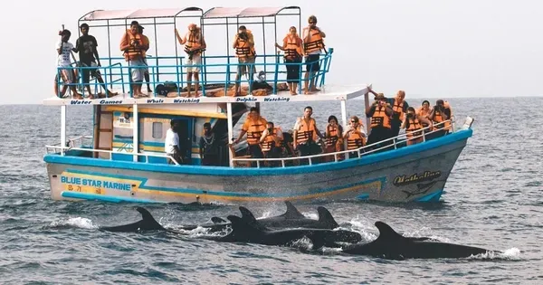
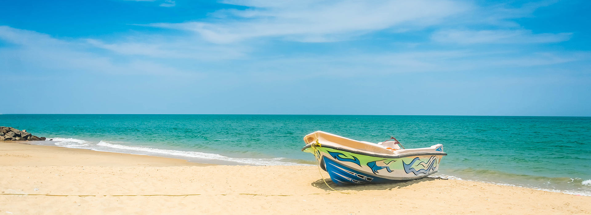
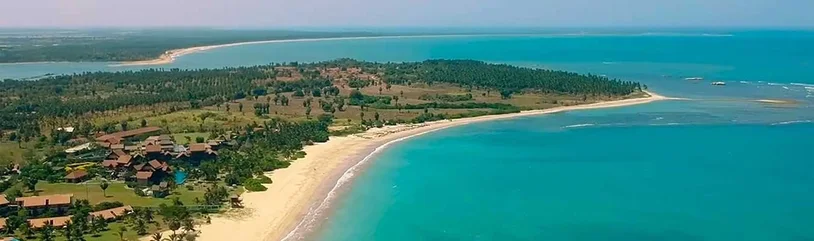
Kalpitiya (Sinhala: කල්පිටිය, romanized: Kalpiṭiya, Tamil: கற்பிட்டி, romanized: Kaṟpiṭṭi) is a coastal town located in the western region of, Puttalam District. The Kalpitiya peninsula consists of a total of fourteen islands. It is developing as a tourist destination.
Day 02 – Kalpitiya
Enjoy a full day of relaxation or adventure in Kalpitiya.
Dolphin Watching & Islands

Spend the day exploring the lagoons, visiting the islands, or heading out to sea for an unforgettable dolphin watching experience. The calm waters and scenic landscapes make it a perfect tropical getaway.
Day 03 – Trincomalee
After breakfast, travel across the island to the beautiful eastern coast of Trincomalee.
Trincomalee Harbor & Coast
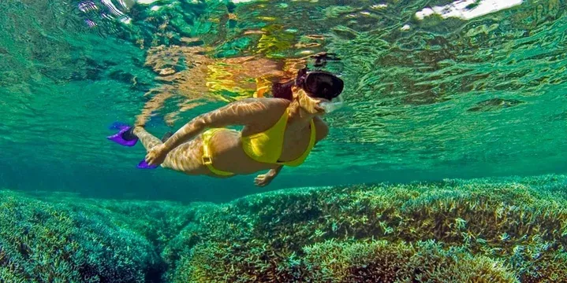

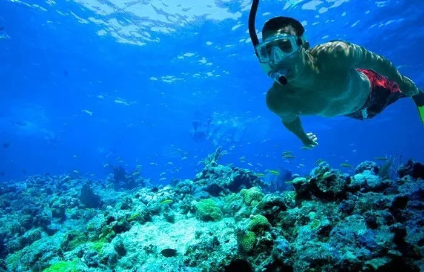
Trincomalee (Trinco) sits on one of the world’s finest natural harbors. This historic city is old almost beyond reckoning: it’s possibly the site of historic Gokana in the Mahavamsa (Great Chronicle), and its Shiva temple the site of Trikuta Hill in the Hindu text Vayu Purana. It makes a great stop over on the way to the nearby beaches of Uppuveli and Nilaveli.
Day 04 – Trincomalee
Discover the wonders of Trincomalee, from its ancient temples to its vibrant marine life.
Koneswaram Temple & Pigeon Island


Visit the iconic Koneswaram Temple, perched on a cliff overlooking the ocean. Later, you can opt for a boat trip to Pigeon Island National Park, a premier spot for snorkeling and viewing coral reefs.
Day 05 – Pasikuda
Travel to the pristine shores of Pasikuda, known for its shallow, calm waters.
Pasikuda Beach
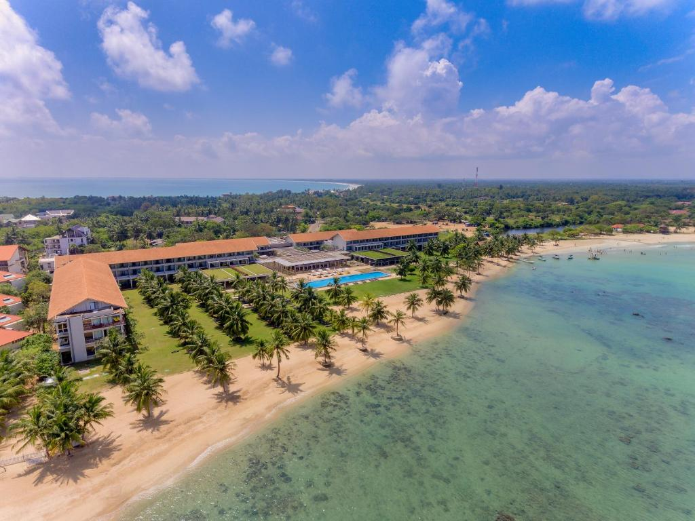
The enchanting Pasikuda Beach is one of the best places to visit in the paradise island of Sri Lanka. The incredible beauty of this glorious beach can take your very breath away. These white sandy shores that fringe lapis lazuli splendour of great Indian Ocean provide ample opportunities to rest and relax. There are plenty of luxury hotels and resorts, catering to the discerning needs of travelers who have started visiting this beach in their numbers. But Pasikuda is still very much a sleeping town, compared to the popular beach destinations in the southern and western coasts of the island.
Day 06 – Pasikuda
Enjoy a day of leisure at one of the most beautiful beaches in Sri Lanka.
Marine Life & Relaxation
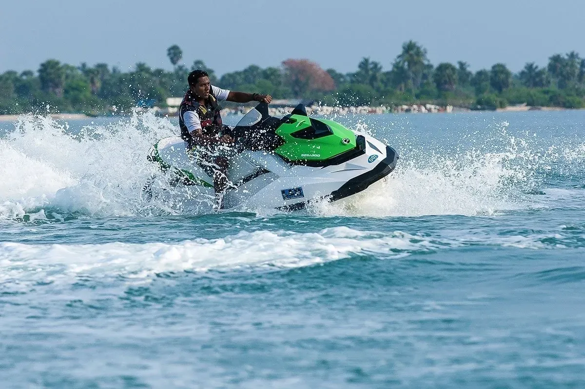
Whether you want to sunbathe, swim, or explore the marine life, Pasikuda offers a serene environment perfectly suited for relaxation and water activities.
Day 07 – Arugam bay
Head south to the world-famous surfing destination, Arugam Bay.
Arugam Bay Surf Point
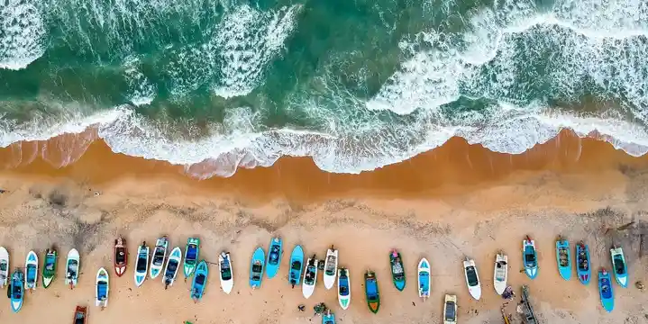

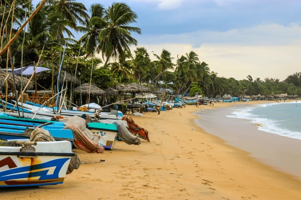
Arugam Bay is a historic settlement on the Indian Ocean coast and a renowned surf spot. It attracts surfers from all over the world with its consistent breaks and laid-back vibe.
Day 08 – Arugam bay
Experience the unique blend of wildlife and surf culture in Arugam Bay.
Wildlife & Scenery
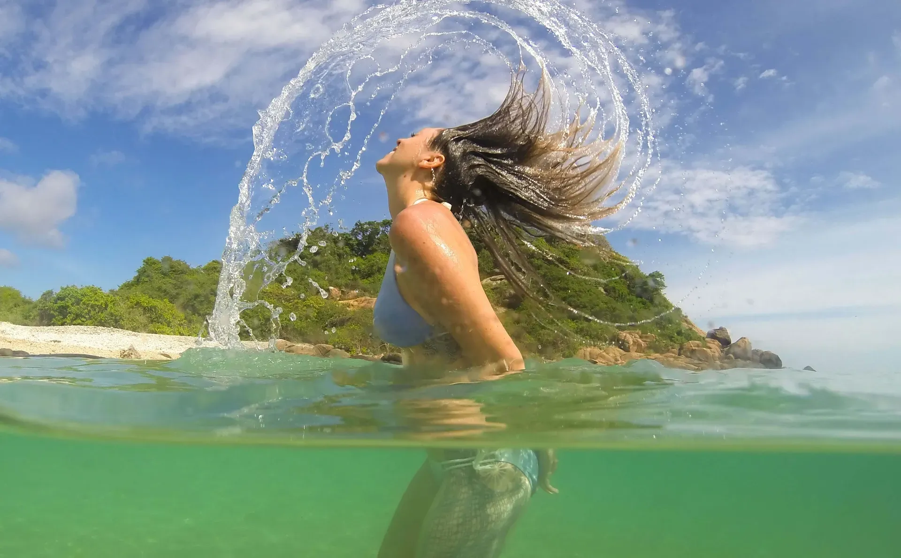
Explore the surrounding lagoons or visit the nearby Kumana National Park. Arugam Bay is not just for surfers; it's a place of incredible physical beauty and biodiversity.
Day 09 – Yala Safari
After breakfast proceed to Yala and visit Yala National Park while enjoying the Yala Safari.
Yala National Park


Yala (යාල) National Park is the most visited and second largest national park in Sri Lanka, bordering the Indian Ocean. The park consists of five blocks, two of which are now open to the public, and also adjoining parks. The blocks have individual names such as Ruhuna National Park (Block 1), and Kumana National Park or 'Yala East' for the adjoining area. It is situated in the southeast region of the country and lies in Southern Province and Uva Province. The park covers 979 square kilometers (378 sq mi) and is located about 300 kilometers (190 mi) from Colombo.
Day 10 – Galle – Hikkaduwa
The next day after breakfast, proceed to Hikkaduwa via Galle.
Galle Fort & Hikkaduwa


Galle is a town situated on the southwestern tip of Sri Lanka, 119 km (74 mi) from Colombo. Galle was known as Gimhathiththa (although Ibn Batuta in the 14th century refers to it as Qali) before the arrival of the Portuguese in the 16th century when it was the main port on the island. Galle reached the height of its development in the 18th century, before the arrival of the British, who developed the harbor at Colombo.
Day 11 – 12 – Hikkaduwa
Full-day leisure on Hikkaduwa Beach.
Hikkaduwa Beach & Town


Hikkaduwa is a seaside resort town in southwestern Sri Lanka. It’s known for its strong surf and beaches, including palm-dotted Hikkaduwa Beach, lined with restaurants and bars. The shallow waters opposite Hikkaduwa Beach shelter the Hikkaduwa National Park, which is a coral sanctuary and home to marine turtles and exotic fish. Inland, Gangarama Maha Vihara is a Buddhist temple decorated with hand-painted murals.
Day 13 – Colombo
The next day after breakfast, proceed to Colombo and enjoy a city tour.
Colombo City
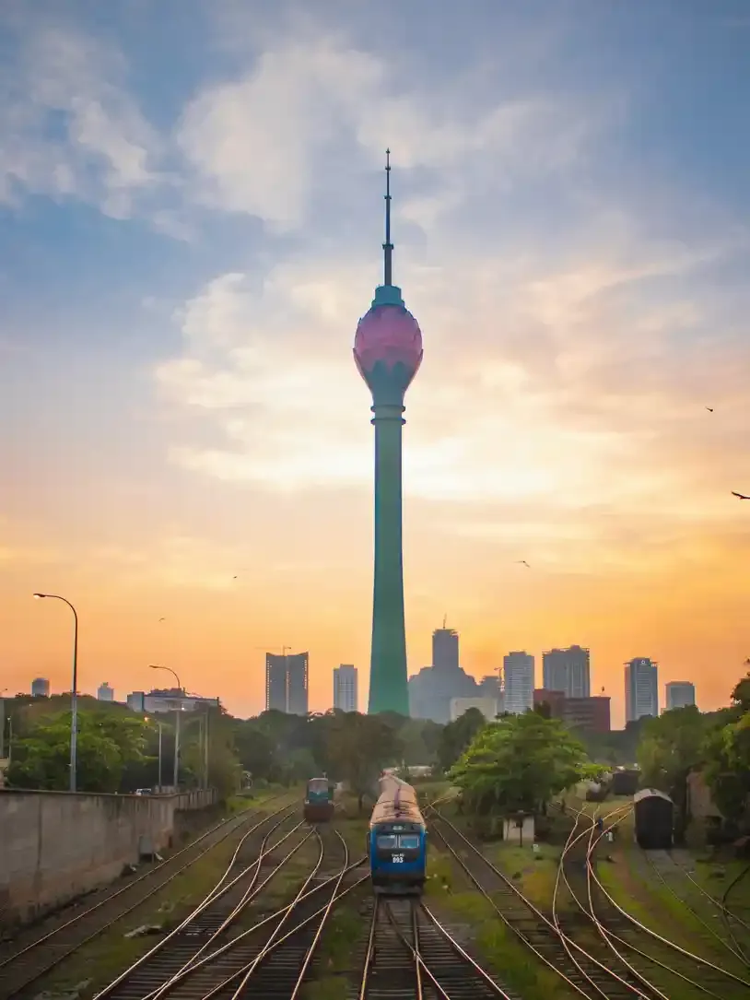


Colombo is the executive and judicial capital and the largest city of Sri Lanka by population. According to the Brookings Institution, Colombo metropolitan area has a population of 5.6 million, and 752,993 in the Municipality. It is the financial center of the island and a tourist destination.
Day 14 – Colombo – Airport
Your grand tour concludes as we take you to the airport for your upcoming flight. We hope you enjoyed your trip!
Map of the whole trip